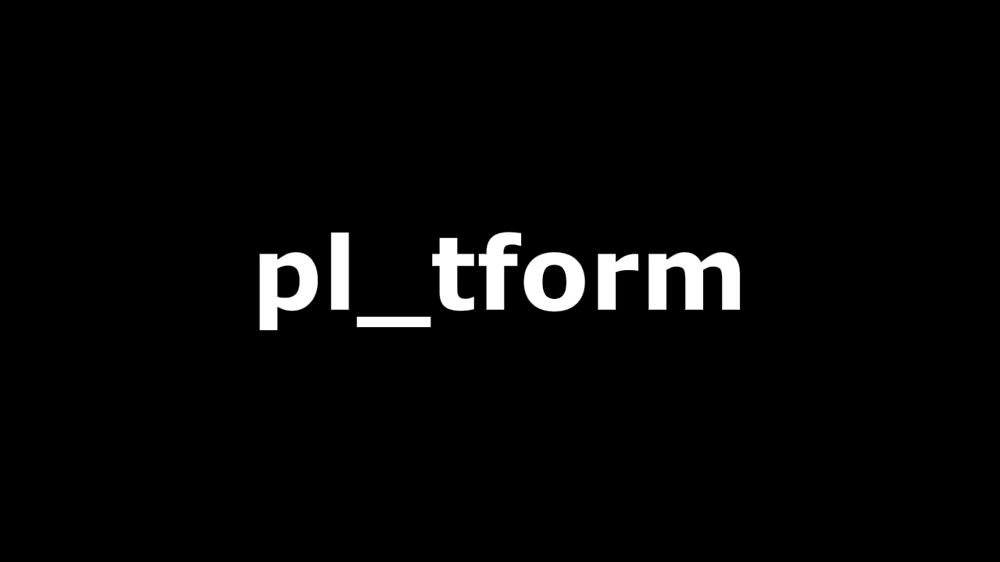

PLATFORM - Newcastle - February 2025
Insights Briefing
Paul Lancaster - PLATFORM & UK Startup Week
Platform has been running every month since last January and will be doing events in Middlesborough from 14th March and will be doing them in Edinburgh from 17th April. The event is all about connecting people in the room and online. The event is also supported by companies locally such as British Business Bank, BlueSky, CircleCloud, HR2Day, Mira, NEL, Precursor, Sweeney Miller Law, True Potential, Ward Hadaway and Wubbleyou.
There's a Platform event every Friday somewhere going forward in Newcastle, Sunderland and Middlesborough along with Edinburgh. Umi have Get Funding service which you can find out about that and more at ukstartupweek.com/. Paul has been appearing on podcasts including Northern Business Podcast, Talking Inspiration and The Responsible Marketing Podcast. Steven Bartlett spoke at the last UK Startup Week in Newcastle and the tickets are available now, but the price goes up in April.
Mike Guellard - Senior Investment Excecutive, NEL Fund Managers Limited
NEL are your partner to a prosperous future and they partner with SMEs and provide capital and help provide economic prosperity across the North East. NEL are an investment specialist and were established in 1989 and are based on Gateshead with a new office in Stockton. They have a proven track record and have invested into over 1,000 businesses. They have an experienced team and are a key funding partner with agile decision making. They structure debt products that aid growth and all decision making is in the North East and are now sponsors of Platform and advocacy important to then and sharing where money can come from and make decisions quickly and find who can give additional support.
They have two funds which include the North East Smaller Loans Fun which is debt finance from £25,001 to £100,000 for terms up to five years for businesses that can demonstrate growth potential. It is designed to be accessible and have a wide range of funding purposes across all sectors and can really fund anything such as for R&D, premises, purchasing new equipment or investing in IT. They don't look for security just what the business can achieve and then have a plan on how to repay on a monthly basis and this can follow angel and VC investment and grant funding pots if you can find this and is typically up to 50% of capital expenditure. If they see a specific sector or expertise they can expand the support more broadly and this begins with a conversation with a business. Case Study is OptiMe which was an app developed designed to aid people in the workplace who are challenged by stress and want some training through the app, Bethany Ainsley who founded OptiMe wanted to go full time into the business so used the investment to help with this and what the business offered.
North East Debt Fund is also over five years and is for £100,000 to £2,000,000 and to service this need to have some form of security from more evolved businesses but can be earlier stage businesses that need more funding and can have a payment holiday at the beginning but they don't take an equity stake in the business. This fund supports ambitious business owners looking to scale and facilitates growth without dilution and is a collaborative process to develop strategy and drive success and can also support acquisitions to buy into a business along with MBOs and MBIs the fund can support this. Case Study of Southern Asset Management who wanted to evolve business and wanted capital to facilitate this Steve Southern provides specialist services that this funding would help them grow.
Why work with NEL? Everything begins with a conversation and Is personal with early engagement and they try to add value where possible and is collaborative for the best deal and helps with guidance and support throughout the investment process. They have local decision-making which enables a quicker turnaround if you have the information prepared and they offer a service that is bespoke with flexible, solution-led investments that are tailored to your needs by looking at the business case. They look for growth-oriented businesses with strong management teams with a sound financial position with credible forecasts and commitment to sustainability along with Net Zero, where it is massive to show your credibility in that regard. They offer diligence tailored to deal size and complexity and with business plan and forecasts but offer guidance if needed and use up-to-date accounting information and have an open-door policy where early conversations are encouraged.
What makes a successful application is those who are organised and proved all required information, they are diligent and invest time with thorough preparation for investment and are transparent with an open and honest approach. Being well advised where are seeking expert guidance and support from networks and open to support by being willing to collaborate and responsive to feedback along with being credible and demonstrate relevant experience and industry expertise.
Show & Tell
Jo Long - Director & Founder, Jo Long Consulting & The Responsible Marketing Podcast
Creating Purposeful narrative and opportunities for brand reputation growth where the future of business will be valued and protected both financial and social values. Jo Long has thirty years of experience in marketing and has commercial experience and has a CIM Level 6 Award in Sustainability as they can help lead and drive sustainability. What do we mean by sustainability? For environment this is carbon emissions, local habitat, supply chain, travel / energy and sourcing. For workplace this is training, labour practices, ethical practices, governance and polity. For community this is engagement, local issues, wealth creation, projects and groups along with education and also philanthropy which includes charitable involvement, volunteering and more such as pro-bono work and fundraising.
Sustainability is a massive area with lots of elements so to make it easier to comprehend is it is about just being more responsible, who are we impacting and how are we impacting people and how can we make a more positive impact. Sustainability matters today as is a growing importance as investors are looking for it such as Public Sector Funders. It also matters for employees and want to know what the culture is like so helps with talent attraction and retention along with seeking purpose driven workplaces, it also helps with conscious consumers to align purchase decisions as brand reputation goes a long way and for stakeholders there is growing pressure for why sustainability matters and there's definitely long-term value.
What's in it for you? Helps boost your brand's reputation and can help find new customers and new markets and can help make sure you can reinvest and make more efficiencies and help organisational longevity and help efficiencies and drive innovation in the business and really innovate in the market or industry. The more you can stand on a platform and say what good you are doing the more people will respect you, it is also cause for risk management of your reputation and if you're not already on that path when going for investment you won't even be looked at. It is a great marketing content and you can talk about it providing you have data and evidence to back it up, your can talk about collaborative partnerships etc, people love a story.
There is also legislation driving sustainability in business so will need to have that consideration and UK businesses will need to report for sustainability disclosure standards which will come into effect by 2027 on 2026 data. You need to get ahead of the game when you need to report later if you start doing it now. You can start with an initial sustainability assessment and can see benchmarks to get a starting point, so you could look at water or energy usage and see how you can reduce this, it has to be aligned with purpose and values of business. There is not a business doing this that doesn't have a good news story, you need to build a narrative around what you're doing and can start with the 17 UN Sustainability Goals and go through them, there may be many you already meet and others you can work towards.
How do you know you are progressing if you don't measure this and start collaborating, you can work with other companies and share combined sustainability elements together, you can be transparent and authentic about what you are doing, in communities and sector. Be happy and proud you are doing this stuff and collate the evidence and make sure you have an aligned narrative, plan your communications and engage with your audience. Make sure not doing green washing, have the data there and what you are saying is not a lie, capture what you have been doing and who you have impacted. Sustainability is not just a trend it is a massive opportunity and the future of businesses will be valued and be protected by both financial and social values and creating a narrative will deliver confidence to communities.
Susan Mandela PhD - Writing & Language Consultant & Founder, Writing Works
AI was still science fiction back in 2004 when computer says no was a thing in Little Britain but now it is not so funny anymore and AI isn't going anywhere so need to know how to live with our creation, so we've let it now, what next? AI has a number of good uses, but what are we going to do and in relation in our tech, happy to use AI to filter out junk email or have traffic updates assisted by AI along with weather and AI is working out how to make high-heeled shoes more comfortable.
As a language consultant and trainer have concerns about text generation and relying on AI to do writing, people have the choice to use AI in their writing. Think about our writing and thinking and when to use an AI and when they don't. It is being responsible and what is the responsible use of AI in our own language and communication.
Today was National Essay Day - write about questions and essays are exercises in gathering information, thinking and evaluating along with decision making and is about what you think and what you think is important and combine information with your own thoughts and insights, what is your answer and why do you have it and then need to articulate your answer clearly and how you got there for the essay. Essays are about thinking and making decisions, writing is the output of your thinking and the decisions you made. Any time you write a report, progress report, feasibility report or an evaluation of a strategy, sustainability report or application for promotion all of these things are essays where you need to gather information and make a judgement about why this information is important and requires you to articulate your thoughts and make a judgement.
Writing takes time and we are busy so an AI that writes for us seems like a good thing, but we know in our hearts that we are fooling ourself. Oh I only get the AI to get some ideas and then we re-work that, so if we get an AI to give us ideas and then edit those ideas we have done nothing to develop those ideas and generate those and have done nothing to get those we have only edited that. Oh I only get an AI to tighten up my prose, what's the harm of this. Thought Exercise starts with words like ”while” and “also” signal increasing complexity about how you put together your thoughts and how they fit together. When grappling with what we think we use “and” to keep things simple but then can contrast with “but” to convey judgements and increases complexity about how you see the world and become more nuanced. If you get an AI do something for you then you're not making the judgement you've give away the power to make that judgement.
Oh Only get the AI to structure ideas, so you may say all your ideas about marketing and how to do anything you are just throwing an AI a list and asking the AI to do your thinking for you, you've not done any contrast, priorities but instead have asked a tool to do that for you. Oh but I'm just not any good at writing? The first draft of anything is shit according to Hemmingway but if you produce your own first draft then you are making the judgements and decisions but if you let an AI do this then you lose ownership over that and then start to think that an AI told you so it must be okay. Are we practising our own writing, what are we practising? Every time we grapple with a body of information and how we put that together into a coherent way we increase our expertise and get better at it, every time we ask an AI to do this, we deny an opportunity for us to learn and grow, we regress and deskill every time we do this. Say you are managing a team and putting together a proposal do you want your team to come to you with ideas with things they have committed to that they have invested their thinking into or one that an AI has spat out and not necessarily something that you have committed to?v
Lot of talk about narrative, if you write this it is your narrative but if an AI has done this then it is the narrative from the AI, when writing you are putting out your story. One thing that troubles them is “help we write”, ordinary people were not allowed to turn off the things in 1984 and it isn't easy to turn off that feature in much the same way. There is another tool called summarise, so you get the AI to do this and you write an email that is then summarised and then the recipient does the same then in what form are you communicating? They don't think an AI belongs there. Summarising is a very complex task, when you do this, you're looking at a body of evidence and build this based on your priorities and is a value judgement and when you get an AI to do this you are outsourcing your value judgements. Are minds are becoming a flightless bird if we don't do our own judgement. Writing is empowering and we empower ourselves when we do our own writing.
Susan works with people to improve their writing and their thinking and a lot of people think of writing is putting pen to paper but what it is thinking and analysing of your stuff, she's also wrote books, essays and journal articles and have wrote about ethics of essays and have thirty years of experience with language and writing and knowledge of what you need to work on and everything you need to do, what they do is bespoke by designing and delivering workshops in language, linguistics and writing, it won't be a generic presentation.
John Paul (JP) Addison - Managing Director, JP Addison & Feel Good Selling
JP is a trainer, coach and helps sell things ethically. Who loves to sell? 0 is people who don't love selling and 10 is those who love selling. Half of people are between 5 and 10 but some are 10. When you think of a salesperson are they pushy? Yes, do you think they are manipulative? Yes, are they Evil? No. When we think of selling do we get the ick? Yes, self-promotion is a difficult thing, and we have belief systems, being sleezy is easy.
JP provides training services for pros and business owners to help them feel good about selling, be good at selling and do good with selling with an ethical approach, to sell something that does good for customers. They started selling telephone lines and then customer support and then sold things like caravans and done this for twenty years and have trained sales professionals and helped businesses with over £20,000,000 of revenue.
Why people fail for the simple reason they don't learn the right skills necessary to succeed? You can talk to people and don't have to worry about talking to strangers if just say hello! When it comes to selling and marketing it is important to understand people won't take action unless they are triggered such as “can I help you” what's the behaviour is you tell them to go away and you tell them to go away and this becomes a habit so need to understand the triggers to understand the behaviour that you drive to deliver a reward.
Buying is a behaviour and people don't like being sold to, we are helping people to buy we're not selling anything, if understand that will manage it better and the customer is being rewarded with a gift, they are better off after having a conversation. If you want to change the customer behaviour you need to change what you deliver to them. How we feel about it has an impact on the performance, three things lead us which is conditions where if been told sales is bad this is instilled into us and goes to belief if we believe it is evil we won't want to do it then ends up in behaviours so working with believe systems is what they work on and part of the coaching they do. The fruits are from the roots - if the beliefs are not right you won't get the rewards, if feel bad about selling will get little reward but if feel good you will get more selling. Selling is a transfer of feeling, if you feel good about it you will sell more.
In Conversation With...
Jason Penney - Senior Account Manager, Tharsus
Jason is senior account manager at Tharsus who want to help get people's products to market and derisk this and want to be part of that facilitation from product development to manufacturing and is nearly product manufacturing as a business.
Tharsus can be working on software and hardware, one of the elements from speaking to clients is hardware is a barrier to entry and the support side for building product is a challenge, they can offer outsource services to support what businesses do and allow them to focus on what is critical to their success. They help people to get their product to market, they can help with ideation and product launch or can scale manufacturing from a small to a larger scale and resolve any manufacturing challenges.
Jason has been part of Tharsus for six years and were head of the Ocado project which was to work with them to develop their online shopping platform and the key strategic machine was the ability to pick product from the grid in their facility and they wanted to develop this product. They developed the bot and built over 5,000 of these which went global in various sites in North America and other countries in their facilities and also partnered with them for the second generation of the bot and develop the relationship with the client and the requirements they needed. They used this to expand into different sectors and opportunities for a test space they developed. The bot moves totes around grid such as produce rotation or for shopping algorithms about moving things around where they need to for Ocado and it is amazing to see the level of technology being applied.
There is a new product that Tharsus developed for the automation of logistics space and spun this off as part of this as an electrotechnical test facility and also developed solution of ways to move product withing facilities with a moving floor where can be on multiple layers and can move boxes around with a small and larger version for larger tonne-sized cages and recognise challenge of building new facilities to use existing spaces more effectively but are in the early stages of building a strategic machine to change the way they operate.
Tharsus is also working on agri-tech and working with an international client to solve problem of inspecting insecticides in fields the size of fields which is using a lot of manpower to work out how much pesticide is in a field so have an autonomous rover bot to inspect crops and feed back this data and what treatments and pesticides are present to get more crop harvests, best way is to understand a client's problem and get the solution and apply technology to get the best outcome to use technology to become more efficient.
Software and hardware elements on how they are using AI? Tharus do use this to help generate content in the first instance and they may delegate a task but use AI to help with an initial version but need to take accountability of what they are putting out. There is a clear message that AI is a tool in the toolbox but need to take accountability of the content but need to be clear and authentic about the narrative. You can make better use of AI when you are an expect in the field and know what the gaps are. There are inputs that are specific and niche that are specific to them but there is also elements in the public domain that need to be cross-referenced in the same way someone would do this you need to fact check and not miss anything, including references and doing due diligence to make sure those references make sense.
Tharus works on big projects so how do they win clients? They have four sectors they focus on like agri-tech, med-tech and lab sciences but also look at electrification and non-carbon related products like EV and also put out content to reach out to business community on LinkedIn, but also looking at making sure they reach out to the right people. Referrals are still a significant part of their business, some of their clients they're not sure where they come from. They are a values based business and that might be signposting them to someone else if it is not an appropriate thing for them they have the right network for someone else, or go through some steps or hurdles first and then come back to them.
People can engage with Tharsus through the website and they have principals and leads in the sectors they work with so can speak to the best person they need to there. Cybersecurity is something they need to make sure they can handle so have the appropriate measures in place and they also get involved directly with clients and the case studies are client approved and anything is locked down appropriately and have IT people who help guide and counsel properly. The products they can build are from the size of a piece of paper to the size of a shipping container up to six or seven tonnes but are expanding the boundaries of what they can achieve such as supporting DNOs and scales of products like HS2 but could be products the size of a shoe box.
Tharsus came from Hebburn as it was on Tharsis Road but got changed by the copywriter when they started and the name stuck, they have a range of engineers and other roles and have a few facilities. It is exciting to have a company like this in the North East of England and is great to help a deprived part of Northumberland in Blyth with STEM jobs and keep those jobs in the region rather than go down to London and provide inspiration to local people. They have opportunities for local people and have an apprenticeship programme including one apprentice who was named apprentice of the year and is great to bring people into the business.